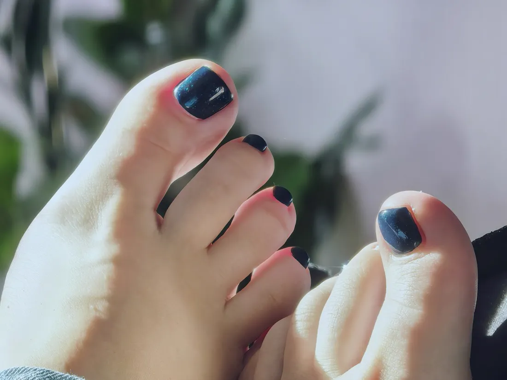

Vos pieds n’attendent pas le mois de juin
Par 36 Beauté · Novembre 2026 · 2 min de lecture
Chaque année, c’est le même scénario. Il fait beau d’un coup, les sandales sortent du placard, et on découvre ce qui s’est passé dans les chaussettes depuis octobre.
On peut rattraper ça en une séance, mais pas tout, et c’est un peu dommage de s’en occuper une seule fois par an. Vos pieds font le plus gros du travail et reçoivent le moins d’attention.
Ce que l’hiver leur fait vraiment
Chaussures fermées, chauffage, peu d’air : la peau du talon s’épaissit et se dessèche. Laissez passer quelques mois et ça accroche les collants. Rien de grave, juste plus long à traiter si on attend.
Le temps joue contre vous
Un ongle d’orteil pousse environ deux fois moins vite qu’un ongle de main. Un ongle abîmé peut mettre de longs mois à se renouveler. Autrement dit, si un gros orteil vous ennuie en avril, ce n’est pas en juin qu’il aura retrouvé sa forme. Autant s’y prendre tôt.
Ce qui se passe dans le fauteuil
Une beauté des pieds, c’est le temps de s’occuper de la peau, des contours et de la forme de l’ongle, avant le vernis. On s’installe, les pieds dans le bac, et personne ne vous demande rien. Pour beaucoup, c’est déjà la moitié de l’intérêt.
| Pour les pieds | Tarif |
|---|---|
| Vernis simple | 15 € |
| Beauté des pieds + vernis simple | 30 € |
| Vernis semi-permanent | 30 € |
| Beauté des pieds + semi-permanent | 50 € |
| Gommage, en supplément | 10 € |
Sur les pieds, le semi-permanent a un vrai avantage : comme l’ongle pousse lentement, la repousse se remarque moins vite que sur les mains.
Entre deux séances, trois gestes tout simples
- Une crème pour les pieds le soir, surtout sur les talons. Inutile de chercher le soin le plus cher : c’est la régularité qui fait le travail.
- Bien sécher entre les orteils après la douche. C’est bête, ça prend dix secondes, et l’humidité qui reste là n’aide personne.
- Couper les ongles droit, sans creuser les coins. C’est la petite habitude qui évite bien des ongles qui rentrent dans la peau.
Et si vous aimez les râpes à talons, allez-y doucement. Une peau trop décapée a tendance à se reformer plus épaisse. Mieux vaut peu et souvent que beaucoup une fois en mai.
Là où notre travail s’arrête
Un soin esthétique n’est pas un soin médical. Si vous êtes diabétique, si un ongle s’incarne, si vous remarquez un ongle épaissi et jauni ou une douleur qui dure, parlez-en d’abord à votre médecin ou à un podologue. On préfère vous le dire ici plutôt que de faire semblant.
Pour tout le reste, n’attendez pas la première terrasse.
On s’occupe de vos ongles ?
Prestation et créneau se choisissent sur notre page Planity.
Réserver en ligne